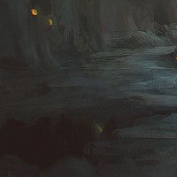

The first thing you notice is the large chasm on the other side of the room. From your vantage, it doesn't appear too deep. As you creep up to the edge and peer down, it's hard to tell where the bottom lies, as it is shrouded in darkness. You catch the glimmer of something sparkling in the depths of the chasm, although you can't be certain what it is. It looked... expensive. Was that the object you had read about? Before you get the chance to drift too far off in to daydreams of riches, there's a pounding now at this door. Luckily, you were able to bar this one when you entered, so you bought yourself a little more time than the previous room. Hopefully. Either way, looks like the way back is no longer an option. There's not much for you to work with in the room, a couple crates and boxes strewn about. You do notice a metal lever on the other side of the room, but there's no telling what it operates. Your eyes keep wandering back to that chasm and the shiny object, but the pounding on the door is also proving very distracting from that. After thinking for a moment, you decide to:

Investigate the Shiny Object in the Chasm
Take a Chance and Throw the Lever
Hide in the Shadows and See What Happens
Search the Boxes and Crates for Something Useful
You scale the chasm wall and head down in to the darkness, searching for the item you had seen. There, in the corner of the chasm, a little sparkle catches your eye again. You carefully make your way over to it, it's so dark, and as you do, the earth beneath your feet feels almost wet. Like mud. Fifteen feet away. Ten feet. You're so close. It's almost within your reach. All of the sudden, as if out of nowhere, an identical shining object appears. From out of thin air you think, but the more the merrier. You reach out, and at your feet, another glittering sphere. Then to you left another, and another. Appearing all around you. Then they start to move. What the... Then you feel the sharp fangs in your feet. You turn your gaze down as a dozen of the shiny spheres gather around your feet. In the faint glow, you see, attached to each sphere, legs. Lots of legs. You slip. And there's so much pain. The last thing you see as the shock sets in, is a king's ransom of shiny, ferociously hungry sparkling treasure.
You hurry over to where the metal lever is. There's a wooden jam stuck in it. You throw it aside and with a deep breath, you decide to the lever and see what happens. You hear a loud grinding noise, as a latch in the ceiling opens. An exit! Molten lava begins to flow into the now open hole. Damn! This must have been some kind of forge before... before it had become a storage room, stacked with boxes and crates. Flammable boxes and crates... The wooden jam makes sense now. You throw the lever back the other way. Nothing happens. Smoke begins to fill the room as everything catches fire. The banging on the door has stopped. It seems the guards have realized what you've done. You picture them laughing to eachother. Pricks. You search for another exit in a panic. There, in the chasm, a large set of iron doors that were masked by darkness before. You race over to them. They don't budge as you suffer a nasty burn throwing a shoulder against them. The iron is quickly growing hot. Another attempt with all your might. It's no use. The pain is excrutiating. Wait, you can't pull yourself away. You clothing has melted to the door. The pain is incredible. The iron is smoking now. You can't catch your breath. Gasping, you begin to lose consciousness. Your skin cooks as more touches the hot metal. Something smells delicious. Someone must be cooking your victory meal.
Erring on the side of caution, you decide to hide in the shadows to see what you're dealing with when the guards enter the room. As tempting as it is to head down in to the darkness to investigate that tiny sparkle, you've heard one too many a tale of horror of curiousity killing the cat. This far under the ground in a forgotten crypt, curiousity is the least of your worries, and an avoidable one. So you find the darkest area of the room that you're in, and you stealthily make your way there. You duck down and make sure that you're enshrouded within the shadows cast by some crates and boxes. The pounding grows louder and louder, and the door begins to give way. As it does so, you catch movement from within the chasm. You had thought that you were alone in the room...
Looking around, your eyes immediately fall on the small crate marked DANGER. Remember when you were a child and mother told you not to touch the flame because it was hot, so you had to know "how hot is it?"" You try to pull the lid off the box. It doesn't give. You wedge your small dagger into the lids wooden planks and with all your might, shove down. You hear a loud crack as the top of the crate loosens and you're able to slide it off. Inside is dark. Wait, no, the inside is black. Something sticky grabs your arm. You look down as a black liquid has stuck itself to your right arm. Then another string shoots out. Then another. And another. Strings of black ooze are erupting from this box and wrapping themselves around your limbs and body. Then they try pulling you in. But the opening is too small. You won't fit. So you end up pulled down, laying atop the small crates opening. You try to scream but the air is pushed from your lungs. The pressure is intense. There's a snap as your back breaks. Sheer terror sets in as bones puncture skin. You begin to fold in ways you weren't meant to. And with a loud cracking sound, intense pain washes over you as you fold in half, the backs of your knees touching your shoulderblades. When the guards finally enter the room, they find a box, leaking blood, with what looks like a human puddle floating inside.